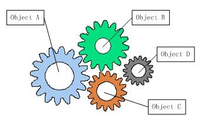
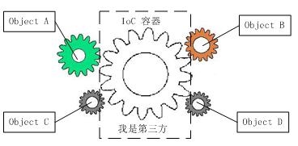

前言
最近在学习Spring框架，它的核心就是IoC容器。要掌握Spring框架，就必须要理解控制反转的思想以及依赖注入的实现方式。下面，我们将围绕下面几个问题来探讨控制反转与依赖注入的关系以及在Spring中如何应用。
- 什么是控制反转？
- 什么是依赖注入？
- 它们之间有什么关系？
- 如何在Spring框架中应用依赖注入？
什么是控制反转
在讨论控制反转之前，我们先来看看软件系统中耦合的对象。

从图中可以看到，软件中的对象就像齿轮一样，协同工作，但是互相耦合，一个零件不能正常工作，整个系统就崩溃了。这是一个强耦合的系统。齿轮组中齿轮之间的啮合关系,与软件系统中对象之间的耦合关系非常相似。对象之间的耦合关系是无法避免的，也是必要的，这是协同工作的基础。现在，伴随着工业级应用的规模越来越庞大，对象之间的依赖关系也越来越复杂，经常会出现对象之间的多重依赖性关系，因此，架构师和设计师对于系统的分析和设计，将面临更大的挑战。对象之间耦合度过高的系统，必然会出现牵一发而动全身的情形。
为了解决对象间耦合度过高的问题，软件专家Michael Mattson提出了IOC理论，用来实现对象之间的“解耦”。
控制反转（Inversion of Control）是一种是面向对象编程中的一种设计原则，用来减低计算机代码之间的耦合度。其基本思想是：借助于“第三方”实现具有依赖关系的对象之间的解耦。

由于引进了中间位置的“第三方”，也就是IOC容器，使得A、B、C、D这4个对象没有了耦合关系，齿轮之间的传动全部依靠“第三方”了，全部对象的控制权全部上缴给“第三方”IOC容器，所以，IOC容器成了整个系统的关键核心，它起到了一种类似“粘合剂”的作用，把系统中的所有对象粘合在一起发挥作用，如果没有这个“粘合剂”，对象与对象之间会彼此失去联系，这就是有人把IOC容器比喻成“粘合剂”的由来。
我们再来看看，控制反转(IOC)到底为什么要起这么个名字？我们来对比一下：
- 软件系统在没有引入IOC容器之前，如图1所示，对象A依赖于对象B，那么对象A在初始化或者运行到某一点的时候，自己必须主动去创建对象B或者使用已经创建的对象B。无论是创建还是使用对象B，控制权都在自己手上。
- 软件系统在引入IOC容器之后，这种情形就完全改变了，如图2所示，由于IOC容器的加入，对象A与对象B之间失去了直接联系，所以，当对象A运行到需要对象B的时候，IOC容器会主动创建一个对象B注入到对象A需要的地方。
通过前后的对比，我们不难看出来：对象A获得依赖对象B的过程,由主动行为变为了被动行为，控制权颠倒过来了，这就是“控制反转”这个名称的由来。
控制反转不只是软件工程的理论，在生活中我们也有用到这种思想。再举一个现实生活的例子：
海尔公司作为一个电器制商需要把自己的商品分销到全国各地，但是发现，不同的分销渠道有不同的玩法，于是派出了各种销售代表玩不同的玩法，随着渠道越来越多，发现，每增加一个渠道就要新增一批人和一个新的流程，严重耦合并依赖各渠道商的玩法。实在受不了了，于是制定业务标准，开发分销信息化系统，只有符合这个标准的渠道商才能成为海尔的分销商。让各个渠道商反过来依赖自己标准。反转了控制，倒置了依赖。
我们把海尔和分销商当作软件对象，分销信息化系统当作IOC容器，可以发现，在没有IOC容器之前，分销商就像图1中的齿轮一样，增加一个齿轮就要增加多种依赖在其他齿轮上，势必导致系统越来越复杂。开发分销系统之后，所有分销商只依赖分销系统，就像图2显示那样，可以很方便的增加和删除齿轮上去。
什么是依赖注入
依赖注入就是将实例变量传入到一个对象中去(Dependency injection means giving an object its instance variables)。
什么是依赖
如果在 Class A 中，有 Class B 的实例，则称 Class A 对 Class B 有一个依赖。例如下面类 Human 中用到一个 Father 对象，我们就说类 Human 对类 Father 有一个依赖。
public class Human {
...
Father father;
...
public Human() {
father = new Father();
}
}
仔细看这段代码我们会发现存在一些问题：
- 如果现在要改变 father 生成方式，如需要用new Father(String name)初始化 father，需要修改 Human 代码；
- 如果想测试不同 Father 对象对 Human 的影响很困难，因为 father 的初始化被写死在了 Human 的构造函数中；
- 如果new Father()过程非常缓慢，单测时我们希望用已经初始化好的 father 对象 Mock 掉这个过程也很困难。
依赖注入
上面将依赖在构造函数中直接初始化是一种 Hard init 方式，弊端在于两个类不够独立，不方便测试。我们还有另外一种 Init 方式，如下：
public class Human {
...
Father father;
...
public Human(Father father) {
this.father = father;
}
}
上面代码中，我们将 father 对象作为构造函数的一个参数传入。在调用 Human 的构造方法之前外部就已经初始化好了 Father 对象。像这种非自己主动初始化依赖，而通过外部来传入依赖的方式，我们就称为依赖注入。
现在我们发现上面 1 中存在的两个问题都很好解决了，简单的说依赖注入主要有两个好处：
- 解耦，将依赖之间解耦。
- 因为已经解耦，所以方便做单元测试，尤其是 Mock 测试。
控制反转和依赖注入的关系
我们已经分别解释了控制反转和依赖注入的概念。有些人会把控制反转和依赖注入等同，但实际上它们有着本质上的不同。
- 控制反转是一种思想
- 依赖注入是一种设计模式
IoC框架使用依赖注入作为实现控制反转的方式，但是控制反转还有其他的实现方式，例如说ServiceLocator，所以不能将控制反转和依赖注入等同。
Spring中的依赖注入
上面我们提到，依赖注入是实现控制反转的一种方式。下面我们结合Spring的IoC容器，简单描述一下这个过程。
class MovieLister...
private MovieFinder finder;
public void setFinder(MovieFinder finder) {
this.finder = finder;
}
class ColonMovieFinder...
public void setFilename(String filename) {
this.filename = filename;
}
我们先定义两个类，可以看到都使用了依赖注入的方式，通过外部传入依赖，而不是自己创建依赖。那么问题来了，谁把依赖传给他们，也就是说谁负责创建finder，并且把finder传给MovieLister。答案是Spring的IoC容器。
要使用IoC容器，首先要进行配置。这里我们使用xml的配置，也可以通过代码注解方式配置。下面是spring.xml的内容
<beans>
<bean id="MovieLister" class="spring.MovieLister">
<property name="finder">
<ref local="MovieFinder"/>
</property>
</bean>
<bean id="MovieFinder" class="spring.ColonMovieFinder">
<property name="filename">
<value>movies1.txt</value>
</property>
</bean>
</beans>
在Spring中，每个bean代表一个对象的实例，默认是单例模式，即在程序的生命周期内，所有的对象都只有一个实例，进行重复使用。通过配置bean，IoC容器在启动的时候会根据配置生成bean实例。具体的配置语法参考Spring文档。这里只要知道IoC容器会根据配置创建MovieFinder，在运行的时候把MovieFinder赋值给MovieLister的finder属性，完成依赖注入的过程。
下面给出测试代码
public void testWithSpring() throws Exception {
ApplicationContext ctx = new FileSystemXmlApplicationContext("spring.xml");//1
MovieLister lister = (MovieLister) ctx.getBean("MovieLister");//2
Movie[] movies = lister.moviesDirectedBy("Sergio Leone");
assertEquals("Once Upon a Time in the West", movies[0].getTitle());
}
- 根据配置生成
ApplicationContext，即IoC容器。 - 从容器中获取
MovieLister的实例。
总结
- 控制反转是一种在软件工程中解耦合的思想，调用类只依赖接口，而不依赖具体的实现类，减少了耦合。控制权交给了容器，在运行的时候才由容器决定将具体的实现动态的“注入”到调用类的对象中。
- 依赖注入是一种设计模式，可以作为控制反转的一种实现方式。依赖注入就是将实例变量传入到一个对象中去(Dependency injection means giving an object its instance variables)。
- 通过IoC框架，类A依赖类B的强耦合关系可以在运行时通过容器建立，也就是说把创建B实例的工作移交给容器，类A只管使用就可以。
参考文章
IoC/DIP其实是一种管理思想
Inversion of Control Containers and the Dependency Injection pattern
依赖注入
跟我一起学Spring 3(4)–深入理解IoC(控制反转)和DI(依赖注入)